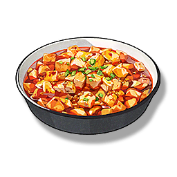

Chili Sauce Tofu
Supplies

Increase the attack of all Resonators in the team by 180 points and 16% critical strike, lasting 30 minutes, only effective for your own Character in multiplayer games.
A layer of red oil is covered on the water tofu, the color is red, and it is delicious. Chili Sauce Tofu is widely spread, and even the nobles of the New Federation are full of praise for it.